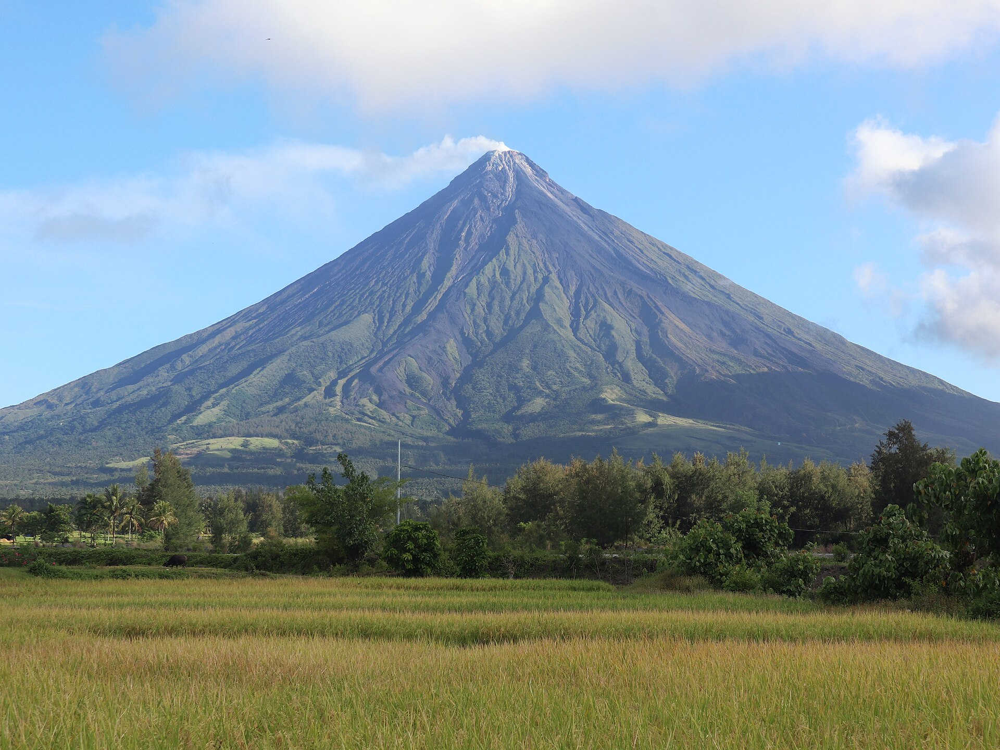

№ 01 · Stratovolcano
Mayon Volcano
Daraga & Legazpi · Albay
Rising 2,463 metres from the Albay plain, Mayon is the world's most perfectly conical volcano — a near-symmetrical silhouette visible from almost anywhere in the province. It is also the country's most active, with recorded eruptions dating to 1616. The summit crater glows faintly at night during periods of unrest, and the surrounding national park offers viewpoints, lava trails, and ATV routes across old flow fields.
View activities on Mayon →